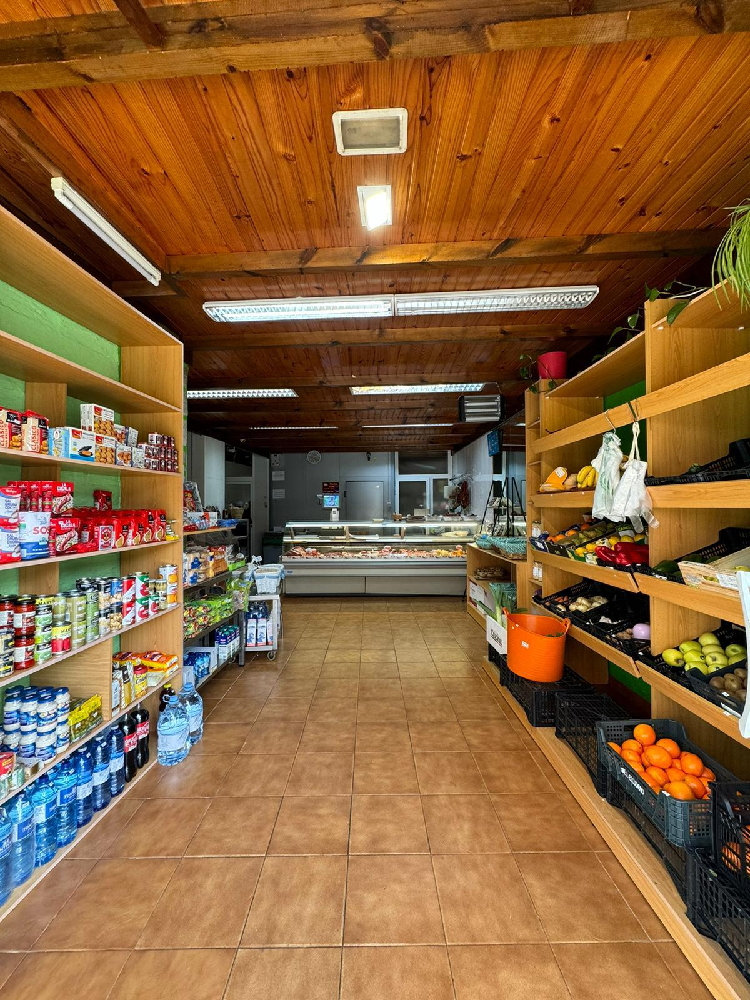
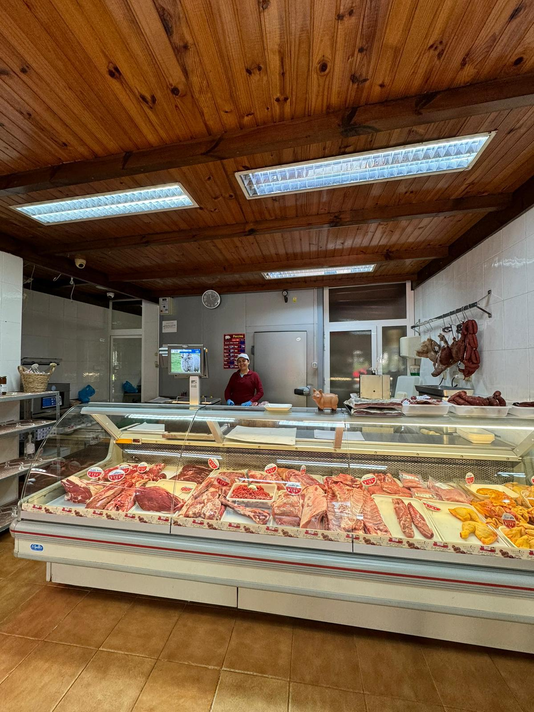

Sobre Nosotros

Carnicería Malu nace del esfuerzo, la pasión y la experiencia. Malu, nuestra fundadora, dedicó 18 años de su vida a la ganadería, trabajando directamente con animales y aprendiendo desde dentro cómo garantizar la mejor calidad de la carne. Aunque disfrutaba de su trabajo en el campo, descubrió que su verdadera vocación estaba detrás del mostrador, cortando, preparando y asesorando a cada cliente con dedicación.
Durante 6 años trabajó como carnicera en distintas carnicerías, perfeccionando su técnica y cultivando el trato cercano que tanto valora hoy en día. Con esfuerzo y amor por su oficio, decidió dar el paso y abrir su propio negocio, donde pudiera controlar cada detalle, desde el origen del producto hasta la sonrisa del cliente al marcharse.
Lo que diferencia a Carnicería Malu es que aquí no vendemos carne cualquiera: vendemos carne de confianza. Los terneros provienen de su propia ganadería, criados con mimo, respeto y en condiciones óptimas. Malu conoce personalmente el origen de cada pieza que llega al mostrador, y eso se nota en el sabor, en la textura y en la tranquilidad que ofrecemos a nuestros clientes.
Porque aquí no solo vendemos carne: compartimos tradición, honestidad y el orgullo de hacer las cosas bien. Si buscas calidad, trato cercano y productos en los que puedas confiar, estás en el lugar adecuado. Ven a conocernos y descubre por qué cada corte en Carnicería Malu tiene historia, corazón y sabor auténtico.
